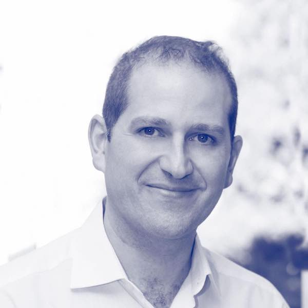

")
")
Hay que colaborar, no competir. La Ciencia está relacionada con la colaboración
|
 |
Laura Barrachina ha entrevistado a Oscar Corcho en el programa Efecto Doppler, de Radio3 (RNE). Han hablado del buen uso de los Datos, de Inteligencia Artificial, de cómo se trabaja –como se sigue trabajando– en un grupo de investigación como el OEG en estos días en los que el teletrabajo se ha impuesto por motivos de sobra conocidos; y, sobre todo, de Ciencia. |
|
Sin eludir ninguna pregunta y con respuestas claras, Oscar Corcho explica con sencillez y claridad qué son los datos y su gran utilidad en momentos como el que nos ha tocado vivir. No descarga de responsabilidad a nadie por un uso inadecuado de los mismos, y pone el acento en la importancia de que el ciudadano esté informado al respecto y sepa cómo debe ceder sus datos. |
El uso de la Inteligencia Artificial en la lucha contra el coronavirus, la repercusión de la Ciencia y los caminos por los que ésta transita, también se abordan en esta entrevista que reproducimos a continuación y que invitamos a escuchar en https://www.rtve.es/alacarta/audios/efecto-doppler/: Confinados. Capítulos XXI: “El buen uso de los datos”.
Hay muchas medidas no sanitarias que contribuyen a frenar el virus y a hacer frente a la pandemia, como la #IA, que en estas semanas ha contribuido a facilitar datos, a encontrar los que están desperdigados en numerosos informes médicos, en miles y miles y miles de páginas. La inteligencia artificial ha ayudado a facilitar, por ejemplo, a los médicos la forma más rápida de encontrar información en retrovirales u otros medicamentos efectivos contra los coronavirus… nuestro invitado ha estado trabajando en ello, es Oscar Corcho, catedrático de la Universidad Politécnica de Madrid (UPM), pertenece al Departamento de Inteligencia Artificial (DIA) de la Escuela Técnica Superior de Ingenieros Informáticos (ETSIINF), donde codirige el Grupo de Ingeniería Ontológica (OEG).
¿Qué es un dato? “Es algo difícil de explicar en poco tiempo, en una entrevista de radio. Lo que para unos es un dato, para otros puede llegar a ser información y para otros pueden llegar a ser conocimientos. A mí me gusta decir que son los elementos más pequeños con los que podemos empezar a trabajar para obtener información y, a partir de ahí, conocimientos… Un dato puede ser desde una medida concreta que hacemos de la temperatura de casa, por ejemplo, hasta cualquier observación que estamos haciendo ahora mismo sobre las personas ingresadas en hospitales o sobre el uso de camas”.
Los ciudadanos tenemos miedo al uso de nuestros datos y no sé si con razón… “Puede haber organizaciones que hagan un mal uso de nuestros datos (los datos de la tarjeta de crédito, por ejemplo, o de nuestra localización… con fines relativamente perversos). Es normal que haya preocupación, pero viviendo en Europa podemos estar relativamente seguros de que nuestros datos están bien tratados, porque hay legislación que permite saber dónde están y qué podemos hacer con ellos”.
Dices relativamente tranquilos… “Cuando tenemos un teléfono móvil en nuestras manos estamos, a veces, proporcionando datos a muchas empresas y compañías. Cuando nos instalamos aplicaciones nos piden permisos… una buena parte de la gente sabe lo que está haciendo cuando da permiso para acceder a los datos de sus contactos, a los datos de su ubicación, en muchas ocasiones lo hacemos porque el servicio que recibimos es adecuado y nos gusta, pero tenemos que ser conscientes de que esos datos podrían ser utilizados de alguna otra manera y es ahí donde tenemos que aprender todos, de manera colectiva, para saber cuándo cedemos nuestros datos y cuándo no”.
En un momento como el que estamos viviendo, los datos pueden salvar vidas. “Por supuesto. Hay un debate abierto ahora mismo sobre cuál debería ser la mejor forma de entender cómo nos comunicamos, cómo nos relacionamos. Si hemos estado cerca de alguna persona que haya podido, por ejemplo, contraer el virus y desarrollar la enfermedad. En ocasiones eso puede ayudar a salvarnos, que se nos avise si tenemos que tener más cuidado. Es importante entender esa balanza con la que tenemos que “jugar” y saber que cediendo algunos datos podamos obtener ese servicio que, en este caso, es muy importante para nosotros y para toda nuestra sociedad.
En general, los datos, si se usan con transparencia pueden revertir en un nivel de democracia mayor. “Sí, sí por supuesto. Realmente todos estamos acostumbrados a utilizar datos. No sé si a diario, pero de manera mensual recibimos información del INE, que nos facilita datos del paro, de la encuesta de población activa, y mucha otra información. Ahora mismo el INE está recopilando información que tiene que ver con datos personales, relacionados con la salud de las personas. Sí podemos estar seguros de que esos datos están tratados teniendo en cuenta una serie de pautas que obligan, por ejemplo, a cumplir lo que se llama el secreto estadístico. Eso es fundamental para saber que nuestros datos se están utilizando de la manera adecuada, que no se van a utilizar nuestros datos personales de cualquier forma no controlada, sino que se van a usar de manera adecuada. De manera que no vamos a tener ningún problema con ello”.
Volviendo a vuestro trabajo de estos días, un proyecto en el que se usa la IA y se trabaja para frenar el virus sin que intervengan medidas sanitarias: ¿En qué consiste este proyecto? “Hace un mes aproximadamente, el Instituto de IA de Paul Allen en USA abrió un conjunto de datos que tenía muchos artículos científicos sobre coronavirus, empezaron con 20.000 y ya van 60.000 (en números de la semana pasada). Todos esos artículos se han ido recopilando desde 2003, cuando empezaron a conocerse mejor los coronavirus y resumen todo el trabajo científico realizado por médicos, realizado en ensayos clínicos, realizado por investigadores de muy distintas áreas –fundamentalmente del área de la Biología y de la Medicina-, en los que estaban tratando con este tipo de virus y las enfermedades asociadas, tratando de ver cuáles podían ser las causas, cómo se podían propagar, cómo se podían evitar… teniendo en cuenta esta cantidad de información empezamos a usar técnicas de IA que procesan todos estos textos (la mayor parte escrita en inglés) e intentar encontrar relaciones entre ellos para facilitar la vida de médicos, de farmacéuticos, de todos aquellos que tienen que tomar decisiones a la hora de crear nuevas medicinas y encontrar relaciones que, a veces, están ocultas en los textos que están produciendo todos los investigadores. Ahí es donde hemos estado trabajando, en aplicar técnicas de IA para poder ofrecer un mejor buscador para todas aquellas personas que tienen que trabajar con todas estas referencias.
Esto se hace para esos medicamentos que se usan para tratar la enfermedad, pero en el caso de la vacuna, el trabajo puede ser similar… “Exacto. Puede ser similar porque muchos de los artículos científicos hablan de muchos de los compuestos que pueden ser utilizados en los tratamientos y también en los estudios que tienen que ver con la vacuna. De hecho este fin de semana hemos estado trabajando en un Hackathon virtual –de toda Europa- y nos han contactado empresas farmacéuticas que están empezando a buscar los compuestos que aparecen en la literatura (científica) relacionados con las posibles vacunas, de tal manera que podrían empezar a producir los compuestos necesarios para el momento en el que pueda empezar a surgir algo”.
¿Qué organismos han estado o están implicados? “En este proyecto trabajamos, por supuesto, nuestro grupo de investigación –somos el grupo más numeroso en este proyecto concreto- pero hemos contado con colaboradores de otras entidades, personas del Servicio Madrileño de Salud, trabajadores de hospitales y otros colaboradores. Pero no somos los únicos, somos uno más de los proyectos que han surgido en relación con este tipo de iniciativas. Muchas universidades, también empresas, se han involucrado en proyectos que miran al mismo problema desde distintos ángulos.”
En la ciencia no hay fronteras y quizá tampoco hay ideologías. ¿Se puede hacer vuestro trabajo de forma ideológica? “No creo que influya la ideología en los trabajos que uno hace desde el punto de vista científico. Lo que sí hay es mucha gente motivada, con ganas de ayudar, con conocimientos y que han visto que ese conocimiento podía ser útil y aportar.”
¿Un buen trabajo científico siempre acaba dando frutos? “En principio sí, aunque cuando uno trabaja en Ciencia se encuentra con muchos callejones sin salida… muchos de los experimentos que realizamos nos llevan a un determinado lugar y vemos que no hemos encontrado nada, que no hemos validado la hipótesis que teníamos al principio. En muchas ocasiones tenemos que retroceder, pero haber explorado esa calle, haber llegado al punto en el que nos encontramos con un muro, pero retroceder y volver a pensar si lo que hemos hecho estaba bien es bastante útil, y nos da una idea amplia de cuáles son las posibles avenidas, las calles que tenemos que explorar.”
¿Qué es la Ingeniería Ontológica? “La Ingeniería Ontológica se basa fundamentalmente en crear modelos de datos, modelos de cómo vemos el mundo, que puedan ser entendidos y acordados por muchas instituciones. Estamos viendo ejemplos muy claros en la representación de los datos relacionados con la COVID y con el virus en todo el mundo. Ahora, de momento, cada país está representando los datos de maneras distintas porque no se ha llegado a un acuerdo previo en cuál debe ser el modelo de los datos a utilizar. Lo que hacemos en la Ingeniería Ontológica es llegar a acuerdos. Conocemos los métodos que se deben aplicar para que distintas organizaciones que están interesadas en lo mismo, puedan representar la información y los datos de la misma manera y que, de ese modo, se puedan crear aplicaciones mucho más rápido…”
El dato en informática y en periodismo no es exactamente lo mismo, pero se parecen mucho, en ambos casos se necesita contexto para llegar a conclusiones, y en este sentido es interesante el hecho de que el lenguaje informático tiene que ser muy preciso…. “si, tenemos que ser muy cuidadosos con cómo damos el contexto a los datos que nos llegan. Es un trabajo que llevamos haciendo hace mucho tiempo, en la informática es algo muy habitual, que en los últimos años se ha convertido en algo todavía mucho más. Estamos hablando de un tipo de perfil que desde las universidades estamos creando, que es el del Científico de Datos, que se define como la mezcla de un informático con un matemático con un estadístico. Es más o menos esa “mezcla” lo que estamos generando, y que estamos ofreciendo ya en títulos de maestría, en títulos de grado, y que demuestran la importancia que tiene mezclar todos esos aspectos: el del tratamiento de los datos, con entender cómo los datos serían lo suficientemente representativos y entender muy bien cómo poder formalizar todo el proceso que se hace con este tratamiento”.
¿Cómo nos va a cambiar la pandemia? ¿Estáis trabajando en ello? “Es difícil predecir esto. Nosotros estamos trabajando en muy diversos frentes. Uno de los más interesantes que ahora estamos abordando desde la Universidad –y hablo de la UPM- es establecer una serie de debates sobre cómo comportarnos, cómo deberíamos ser, cómo será nuestro futuro en “El día después”… ya hay seminarios centrados en ello, organizados por compañeros de la UPM junto con otras organizaciones, en hacer una reflexión global… ya veníamos trabajando con ello desde la perspectiva de los Objetivos de Desarrollo Sostenible (ODS), la Agenda 2030… creo que este momento, esta situación, nos ha dado una oportunidad más para sentarnos, tener ese debate y pensar cómo deberíamos ser en el futuro”.
No sé si una conclusión segura es que lo que mejor nos podría venir a todos es una mayor inversión en Ciencia, aunque lo que no se sabe si es tan seguro es si desde el sector público o si quizás se trata de que ambos mundos se unan cada vez más: lo público con lo privado… “Deben ir de la mano. No debe haber una diferenciación en el tratamiento de la Ciencia entre lo que podría ser público o privado. Cuando hablamos de ciencia, de tecnología, hablamos de una serie de métodos que la comunidad científica valida, que entiende como los mejores en el momento en que los intentamos aplicar, y eso es indiferente que se haga desde lo público o desde lo privado. Lo que es importante es que ambos mundos se entiendan, se hablen, contribuyan en uno con el otro… ambos mundos deben acercarse uno al otro con una perspectiva muy abierta. Hay que colaborar, no competir. La ciencia está relacionada con la colaboración”.

Created under Creative Commons License - 2015 OEG.